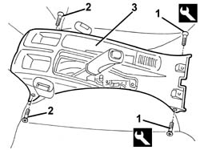

7040L22 REAR TRIM on TUNNEL -R.R.
- Path
- Procedures > 70 FITTINGS > 7040 BODYSHELL INTERIOR TRIMS AND FITTINGS > 7040L cabin floor covering > 7040L22 REAR TRIM on TUNNEL -R.R.
- Kind
- repair procedure (removal / refitting; the operation number is the code)
- Applies to
- all engines; all production periods
- Interactive page
- https://sloeber94.github.io/elrnDB-a156/en/#/3238850
Applies to: all engines; production: da 03/02 a 09/03, da 10/03
 Removing
Removing
 Refitting
Refitting3380A44 handbrake/linkage protection - r+r
Move the front seats completely back.
1. Undo the front bolts using the special tool.
 | Name | Country |
|---|---|---|
1 | Key | 1.822.132.000 |
Move the front seats completely forward.
2. Undo the rear bolts.
3. Remove the rear tunnel cover.

Applies to: all engines; production: da 03/02 a 09/03, da 10/03
Refitting
RemovingCheck that the rear tunnel cover is not damaged.
Fit the trim in its seating.
Tighten the rear bolts.
Move the front seats completely back.
Tighten the front bolts using the special tool.
| Name | Country |
|---|---|---|
1 | Key | 1.822.132.000 |